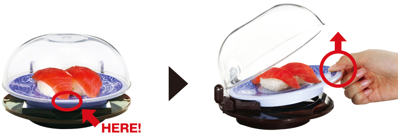

藏壽司

為了讓客人能安心、愉悅地用餐，我們導入了「鮮度くん」。
鮮度くん的使用方法
請拿著鮮度くん內的盤子，將盤子前端往上抬。
1. 隔絕口水、細菌，使壽司保鮮又安全！
隔絕空氣中飄浮的口水、細菌，使壽司保鮮又安全！
2. 不需碰觸鮮度くん就可以取出商品。
不需觸碰鮮度くん就可以取出商品，非常衛生！盤子也可以輕鬆取出。
請自由取用迴轉台上「鮮度くん」內您所喜愛的商品。迴轉台上沒有的商品可以利用「觸控式螢幕」點餐。
 計盤回收系統
計盤回收系統
將空盤投入回收孔後將直接送達洗碗場，投入盤數亦顯示於點餐平板，減少人為計算失誤及收拾整理時間，隨時保有舒適用餐環境。
品牌故事
企業理念
發展沿革
心得